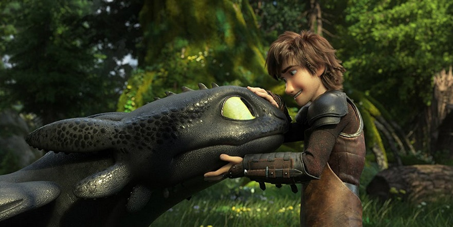
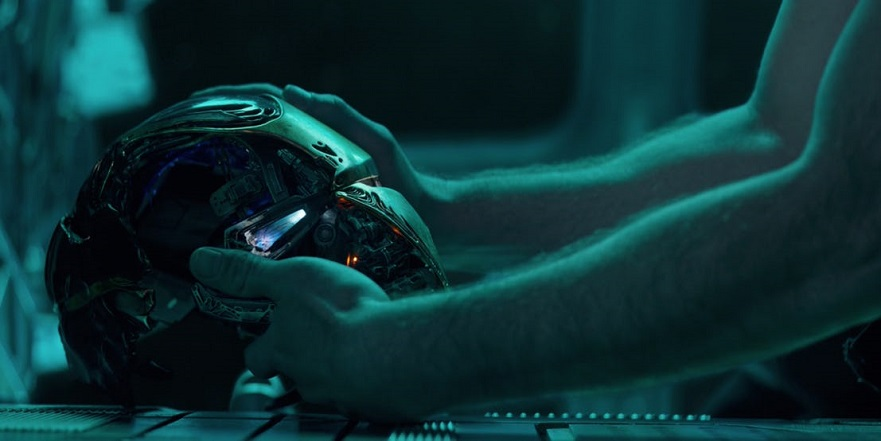
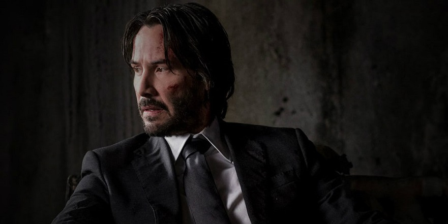
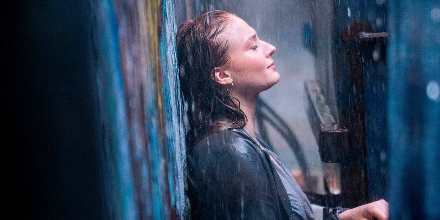
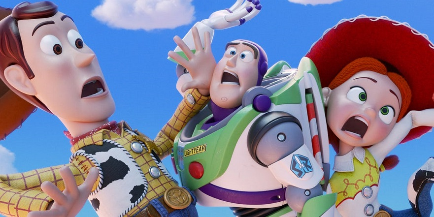

Several movie franchises are coming to an end (sorta) in 2019. Nothing ever really ends in Hollywood, of course, and studios have become increasingly reliant on reboots of established IPs and brands in recent years especially. Nevertheless, 2019 is shaping up to be a big year for hit properties either calling it a day for real (again, sans a reboot down the line) or reaching an important turning point that commemorates the end of an era... and a fresh start for the franchise at large.It's worth noting, however, that our rundown doesn't include conclusions to two-part adaptations (see IT: Chapter Two) or what may or may not be the last movie sequels in a franchise (Zombieland 2, Frozen 2, and so on). That also goes for releases like M. Night Shyamalan's Glass, which the filmmaker has indicated could be the final installment in his Unbreakable/Split universe... but could also end up being the start of something even bigger, depending on how things play out. With that in mind, let's dive into all the big-name franchise that are "ending" next year.
HOW TO TRAIN YOUR DRAGON
The first How to Train Your Dragon movie came out in 2010 and has since spawned a movie sequel, a TV series (DreamWorks Dragons), and next year's How to Train Your Dragon: The Hidden World. However, lest anyone think there could be additional spinoffs and/or sequels down the line, series director Dean DeBlois has confirmed that won't be the case. Back in September, the filmmaker told EW The Hidden World will wrap up both the How to Train Your Dragon movie franchise and TV series; as he explained, "You will understand why Hiccup says, as you heard in the trailer, ‘There were dragons when I was a boy.’ And by the end of this film, you’ll have answered the question [of] what could have happened to them.”
Avengers
Yes, Marvel Studios is kinda lying about Avengers: Endgame being the, well, end for Earth's Mightiest Heroes - but at the same time, they're not. The film is not only a conclusion to Avenger: Infinity War's dismal cliffhanger ending, but also the original Avengers' stories in the Marvel Cinematic Universe and the MCU's third phase in general. Life in the MCU will certainly be different after Endgame and, as far as we know, actors like Robert Downey Jr., Chris Evans, and Chris Hemsworth will permanently step away from the franchise after this movie. At the very least, a new generation of MCU actors will be leading the charge in Phase 4.
John Wick
The John Wick franchise kicked off in 2014 and has quickly become the gold standard for American action filmmaking since then. There are also plans in motion for a TV spinoff called The Continental, which Starz green-lit at the start of the year. However, as far as the movies go, John Wick 3: Parabellum aims to bring Mr. Wick's (very) bloody and violent odyssey on the big screen to an end. Series director Chad Stahelski confirmed as much all the way back in June 2017, when he said the third film will explore John's backstory and reveal "where he wants to go... it will be a nice completion to Mr. Wick's journey".
X-Men
Things are about to change in a big way for Fox's X-Men movies. One Disney finalizes its purchase of Fox, Marvel Studios will be able to incorporate the mutants into the Marvel Cinematic Universe in whatever way theye deem fit. However, before that happens, next year's X-Men: Dark Phoenix will continue the story from the X-Men prequel trilogy (First Class, Days of Future Past, and Apocalypse) and, presumably, bring things to a satisfying conclusion. That's the general expectation since, in all likelihood, Marvel Studios plans to reboot the X-Men franchise once it has the film rights back.
Toy Story
Things are about to change in a big way for Fox's X-Men movies. One Disney finalizes its purchase of Fox, Marvel Studios will be able to incorporate the mutants into the Marvel Cinematic Universe in whatever way theye deem fit. However, before that happens, next year's X-Men: Dark Phoenix will continue the story from the X-Men prequel trilogy (First Class, Days of Future Past, and Apocalypse) and, presumably, bring things to a satisfying conclusion. That's the general expectation since, in all likelihood, Marvel Studios plans to reboot the X-Men franchise once it has the film rights back.
Star Wars
Star Wars has been around for more than forty years and, in that time, it's never really gone away. Case in point: there are already multiple live-action Star Wars TV series being developed to continue the saga onward after Star Wars: Episode 9 comes out next year. All the same, Lucasfilm has confirmed that Episode 9 is "the final installment of the Skywalker saga" and will bring the stories of Luke Skywalker, Leia Organa, and Ben "Kylo Ren" Skywalker to a fitting conclusion. It will also be the final movie to feature Carrie Fisher as Leia, following her passing in late 2016.